7 Bases de datos regionales
Muchos procesos aleatorios varían de manera continua en el espacio a escala regional. Entonces, es de interés predecir el comportamiento de una variable en referencia a su ubicación geográfica. En algunas situaciones además de la distribución en el espacio otras capas de información (covariables de sitio) pueden ser usadas para mejorar la predicción en un sitio específico. En esta parte se ilustran el manejo de datos espaciales para la predicción a escala regional de una variable a partir de múltiples capas de información y la construcción de un modelo de predicción espacial vía estrategias metodológicas alternativas: regresión múltiple vía REML, regresión múltiple vía INLA y regresión no lineal vía modelo basado en árbol.
Como ejemplo se utiliza la base de datos suelos_cba.txt. Esta es una parte del SIG de los suelos del horizonte superficial de la provincia Córdoba (Hang et al. 2015), que contiene 350 sitios caracterizados por múltiples variables edáficas que describen los primeros 15 cm de profundidad. Las variables presentes en suelos_cba.txt son: COS (Carbono Orgánico de Suelo, g/kg) arcilla (%), pH, elevación (m.s.n.m.), twi (Índice Topográfico de Humedad). El objetivo del análisis es ajustar modelos que expliquen la variabilidad espacial de COS en función de las restantes variables en la base de datos.
Para seguir la ilustración, cargar los paquetes específicos de R que albergan las funciones que se utilizarán tanto para el manejo como para la modelación.
7.1 Manejo de datos espaciales
Mediante la función read.table() se lee un archivo de texto que se guarda como un objeto denominado suelos, en el cual las columnas están separadas por tabuladores y la primera fila contiene los nombres de columnas. Mediante la función head() se visualizan las primeras filas del objeto suelos donde se observa que la primera columna corresponde a una identificación, las siguientes dos son las coordenadas X e Y las cuales corresponden al sistema de proyección UTM faja 20. Las columnas siguientes contienen las variables en estudio.
suelos <- read.table("datos/suelos_cba.txt",
sep = "\t", header = TRUE)
head(suelos) ID_2 X Y elevacion twi arcilla pH COS
1 2 603163.6 6576899 100 135 30.8 6.6 25.98
2 3 596537.1 6390518 87 133 24.0 7.4 17.29
3 4 595665.5 6380484 93 126 28.5 6.1 17.43
4 5 601138.5 6353446 105 119 28.8 6.9 15.08
5 6 601798.1 6344096 111 127 25.2 7.4 17.30
6 7 587501.2 6615272 94 135 33.6 6.7 16.13Para transformar este objeto en uno de clase espacial, se utilizará la función st_as_sf(), especificando que las coordenadas X e Y, se encuentra en las columnas “X” e “Y”, respectivamente. Todos los sistemas de coordenadas tienen asociados un código que los identifica y que a través del cual, se pueden conocer los parámetros asociados al mismo, este código se llama EPSG por su acrónimo en inglés. El código EPSG del sistema de referencia y proyección de la base de datos es 32720. El objeto suelos_sf, ahora es un objeto espacial de clase sf, donde cada observación corresponde a cada sitio de muestreo. Se muestra el sistema de referencia y proyección de las coordenadas y el tipo de geometría.
Simple feature collection with 350 features and 6 fields
Geometry type: POINT
Dimension: XY
Bounding box: xmin: 235888.3 ymin: 6133188 xmax: 603163.6 ymax: 6722199
Projected CRS: WGS 84 / UTM zone 20S
First 10 features:
ID_2 elevacion twi arcilla pH COS geometry
1 2 100 135 30.8 6.6 25.98 POINT (603163.6 6576899)
2 3 87 133 24.0 7.4 17.29 POINT (596537.1 6390518)
3 4 93 126 28.5 6.1 17.43 POINT (595665.5 6380484)
4 5 105 119 28.8 6.9 15.08 POINT (601138.5 6353446)
5 6 111 127 25.2 7.4 17.30 POINT (601798.1 6344096)
6 7 94 135 33.6 6.7 16.13 POINT (587501.2 6615272)
7 8 97 135 35.7 6.9 15.24 POINT (589808.2 6593001)
8 9 100 134 30.1 6.0 12.90 POINT (585406.5 6575712)
9 10 100 134 32.7 6.6 15.74 POINT (584319.9 6552571)
10 11 108 135 33.2 6.0 27.03 POINT (582795.8 6536823)Para explorar los datos se usa el paquete tmap que permite realizar gráficos estáticos o dinámicos. Con la opción dinámica, se puede interactuar con el gráfico de manera análoga a un SIG. Para cada gráfico, se comienza utilizando la función tm_shape() especificando el objeto a graficar. Cada observación se grafica un punto mediante la función tm_dots(), cada nivel se agrega mediante el símbolo +.
Para agregar latitud y longitud a esta figura se realiza una reproyección. En la función tm_shape() se especifica el nuevo sistema de coordenadas con el que se desea graficar (argumento projection). Se agregar el nivel tm_grid() para visualizar una grilla que contiene las coordenadas latitud y longitud.
Cualquiera de estos gráficos se puede convertir en un gráfico dinámico mediante la función tmap_mode() especificando como argumento "view". Para continuar con gráficos estáticos se debe especificar "plot" como argumento de esta función. Mediante la función tm_basemap(), se pueden incorporar distintas capas base. Las opciones disponibles para las capas base se pueden ver mediante el comando names(leaflet::providers).
Cualquiera de estos gráficos se puede convertir en un gráfico dinámico utilizando la función tmap_mode() especificando como argumento "view". Para continuar con gráficos estáticos se debe especificar "plot" como argumento de esta función. Mediante la función tm_basemap(), se pueden incorporar distintas capas base (capas de fondo que ayudan a visualizar). Las opciones disponibles para las capas base se pueden ver mediante el comando names(leaflet::providers).
tmap_mode("view")
tm_shape(suelos_sf) +
tm_dots() +
tm_basemap("Esri.WorldImagery", "OpenTopoMap")
7.2 Confección de grillas de predicción
Para generar esta grilla es necesario definir una resolución espacial en el área de interés. Para este ejemplo, se utiliza un archivo vectorial, limites_cba.shp, el cual define el límite del territorio sobre el que se desea predecir.
limites_cba <- st_read("datos/limites_cba.shp",
quiet = TRUE)
limites_cba <- st_transform(limites_cba,
crs = 32720)La función st_make_grid() genera una grilla rectangular conteniendo el área del objeto limites_cba. Para definir la resolución espacial de la grilla se utiliza el argumento cellsize definiendo un tamaño de grilla en relación con la unidad de medida del sistema de coordenadas, en este caso 10000 metros, dado que está en UTM.
grilla_base <- st_make_grid(limites_cba,
cellsize = 10000)
tm_shape(grilla_base) +
tm_borders() +
tm_shape(limites_cba) +
tm_borders(col = "red")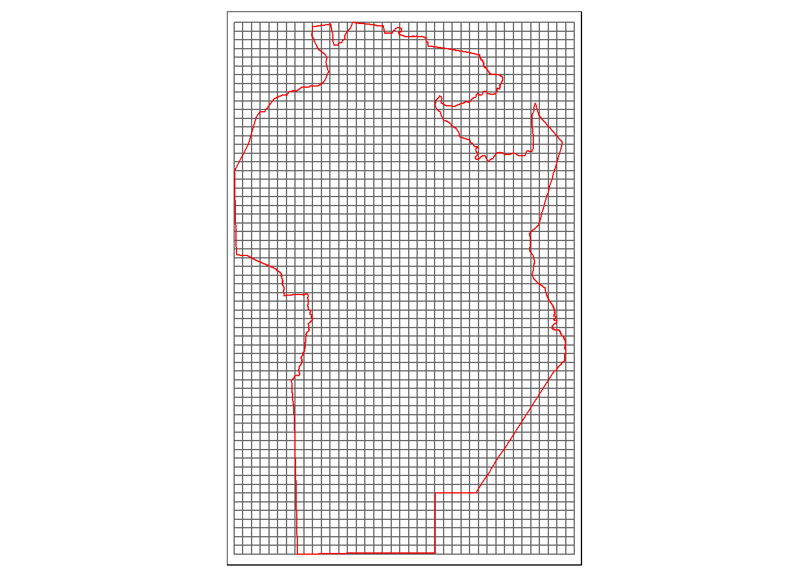
Dado que la grilla es rectangular, es necesario cortarla según los límites. Para esto se realiza una intersección entre los límites y la grilla utilizando la función st_intersection().
grilla_pred <- st_intersection(limites_cba,
grilla_base)
tm_shape(grilla_pred) +
tm_borders()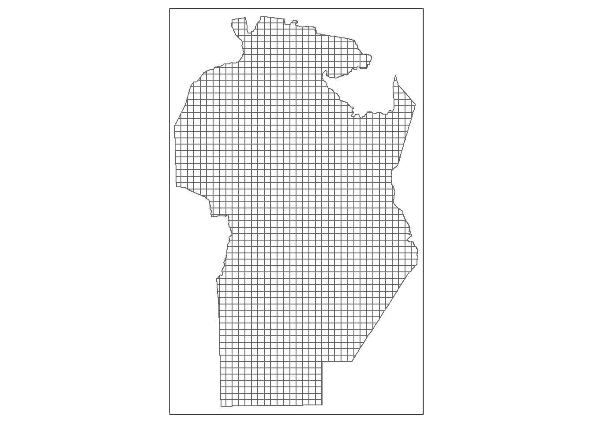
Los algoritmos de predicción implementados trabajan prediciendo sitios puntuales, por lo cual, a partir de la grilla, es necesario generar una grilla de puntos. Una alternativa es utilizar la función st_centroid() para obtener el centroide de cada celda.
centroide_pred <- st_centroid(grilla_pred)Warning in st_centroid.sf(grilla_pred): st_centroid assumes attributes are
constant over geometries of x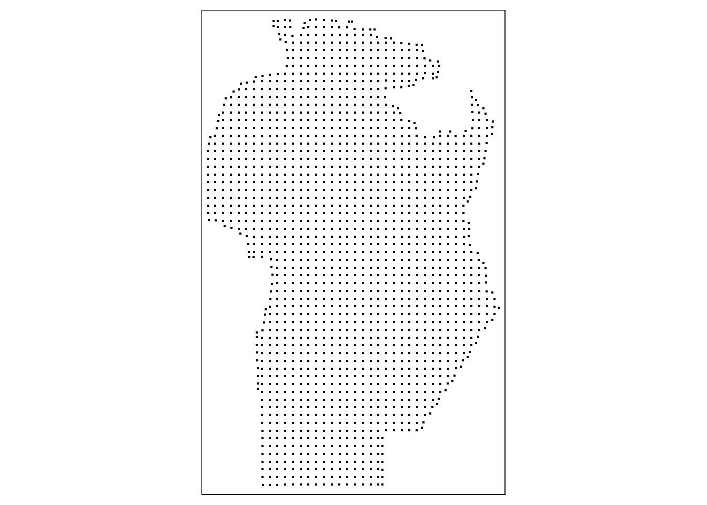
7.3 Agregado de capas de información
Se presenta los comandos necesarios para combinar múltiples capas de información en un mismo objeto. Las variables elevación y twi son extraídas desde modelos digitales de elevación, que se encuentran en formato raster. El paquete terra de R es específico para lectura y manipulación de este tipo de archivos. Para leer un archivo de este formato, se puede utilizar la función rast() mientras que para reproyectar se utiliza la función project(). El archivo elevacion.tif contiene datos de elevación para la provincia de Córdoba. Cuando se imprime el objeto, se muestra la cantidad de pixeles por fila, columna, pixeles totales, la resolución espacial, las coordenadas extremas en latitud y longitud, el sistema de coordenadas de referencia, los valores mínimo y máximo de la variable observada.
elevacion <- rast("datos/elevacion.tif")
elevacion <-
project(elevacion,
y = "+proj=utm +zone=20 +south
+datum=WGS84 +units=m +no_defs")
elevacionclass : SpatRaster
dimensions : 3028, 2123, 1 (nrow, ncol, nlyr)
resolution : 217.938, 217.938 (x, y)
extent : 196380.6, 659063, 6100616, 6760532 (xmin, xmax, ymin, ymax)
coord. ref. : +proj=utm +zone=20 +south +datum=WGS84 +units=m +no_defs
source(s) : memory
name : elevacion
min value : 38.37358
max value : 2745.15332 Para obtener en los sitios de predicción el valor de la variable del objeto raster, se utiliza la función extract() definiendo como argumento el nombre del objeto raster y el nombre del objeto vectorial que contiene los sitios. Estos valores extraídos se adicionan en una columna llamada elevacion dentro del objeto centroide_pred utilizando la funcion cbind.
El archivo twi.tif contiene valores de un índice topográfico de humedad también generado a partir de datos provenientes de un modelo digital de elevación..
twi <- rast("datos/twi.tif")
twi <-
project(twi,
y = "+proj=utm +zone=20 +south
+datum=WGS84 +units=m +no_defs")
twiclass : SpatRaster
dimensions : 1514, 1062, 1 (nrow, ncol, nlyr)
resolution : 435.8761, 435.8761 (x, y)
extent : 196380.6, 659280.9, 6100616, 6760532 (xmin, xmax, ymin, ymax)
coord. ref. : +proj=utm +zone=20 +south +datum=WGS84 +units=m +no_defs
source(s) : memory
name : twi
min value : 53.5437
max value : 137.8588 Utilizando la función extract() se extrae los valores de TWI para cada sitio de la grilla de predicción.
Se adiciona a la grilla variables procedentes de otras fuentes (SIG de muestreo de suelo). Estos datos se encuentran en los archivos raster llamados arcilla.tif y pH.tif, respectivamente. Estos raster tienen la misma resolución espacial y extensión, por lo que es posible superponerlos en un mismo objeto mediante la función c().
arcilla <- rast("datos/arcilla.tif")
pH <- rast("datos/pH.tif")
edaf <- c(pH, arcilla)
crs(edaf) <- "+proj=utm +zone=20 +south +datum=WGS84 +units=m +no_defs"
tm_shape(edaf) +
tm_raster() +
tm_facets(free.scales = TRUE) +
tm_legend(position = c('left','bottom'))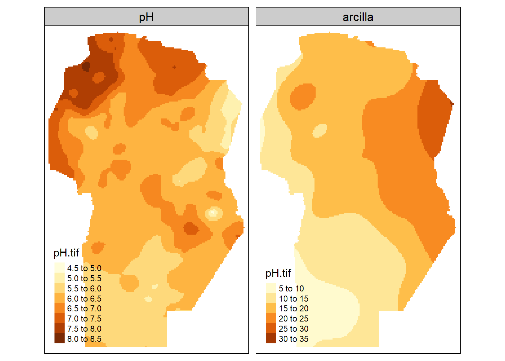
Se seleccionan los valores de los sitios utilizando la función extract(). Como los valores extraídos mediante la funcion desde un stack de rasters genera un objeto de tipo data.frame con tantas columnas como capas contenga ese raster, se adicionan al objeto centroide_pred mediante la función cbind(), la cual une columnas de igual número de filas. Ahora el objeto cetroide_pred contiene todos los sitios de predicción con las variables auxiliares adicionadas.
edaf_pred <- extract(edaf,
centroide_pred,
ID = FALSE)
centroide_pred <- cbind(centroide_pred,
edaf_pred)
centroide_predSimple feature collection with 1668 features and 8 fields
Geometry type: POINT
Dimension: XY
Bounding box: xmin: 239427.6 ymin: 6129968 xmax: 614506.7 ymax: 6729403
Projected CRS: WGS 84 / UTM zone 20S
First 10 features:
UNION JURISDICCI CAPITAL FUENTE elevacion twi pH arcilla
1 -2147483648 CORDOBA CORDOBA IGN 274.8449 118.4764 6.391590 8.209237
1.1 -2147483648 CORDOBA CORDOBA IGN 257.2227 113.7088 6.262683 8.882079
1.2 -2147483648 CORDOBA CORDOBA IGN 266.5454 112.7255 6.142890 9.475647
1.3 -2147483648 CORDOBA CORDOBA IGN 255.0000 118.6159 6.136549 9.945969
1.4 -2147483648 CORDOBA CORDOBA IGN 230.9800 119.1276 5.946674 10.268174
1.5 -2147483648 CORDOBA CORDOBA IGN 201.1941 118.7030 5.782518 10.445782
1.6 -2147483648 CORDOBA CORDOBA IGN 185.8633 123.6503 5.805237 10.512389
1.7 -2147483648 CORDOBA CORDOBA IGN 176.7831 122.9565 5.846396 10.524518
1.8 -2147483648 CORDOBA CORDOBA IGN 162.5928 126.4006 5.893137 10.547595
1.9 -2147483648 CORDOBA CORDOBA IGN 156.4618 124.1537 5.920496 10.639622
geometry
1 POINT (310498.8 6129968)
1.1 POINT (319332.6 6130045)
1.2 POINT (329333.4 6130153)
1.3 POINT (339337.7 6130238)
1.4 POINT (349337.5 6130314)
1.5 POINT (359337.5 6130390)
1.6 POINT (369342.5 6130448)
1.7 POINT (379342.4 6130496)
1.8 POINT (389342.3 6130543)
1.9 POINT (399342.2 6130590)Para identificar la variación de la variable de interés en un plano, se puede usar una escala de colores. La elección de la escala cambia según los colores y los puntos de corte (valores de la variable de interés en los cuales cambia el color). Para definirla algunas opciones automáticamente identifican los valores para categorizar y asignar un color. Por defecto, tmap categoriza los valores en intervalos fijos. Utilizando el argumento style, se puede modificar el método a utilizar. Las opciones style = "order" y style = "cont" permiten representar variables numéricas en un gradiente de color. La opción “order” realiza una escala en función del ranking de los valores, permitiendo una mejor visualización de variables asimétricas. Para la visualización de más de un mapa generado con tmap en un mismo gráfico, se puede utilizar la función tmap_arrange(), utilizando como argumento los mapas que se quieren visualizar. El argumento sync = TRUE permite la visualización interactiva con la navegación (zoom y movimiento) sincronizada en ambos mapas.
elevTm <- tm_shape(centroide_pred) +
tm_dots("elevacion", style = "order")
twiTm <- tm_shape(centroide_pred) +
tm_dots("twi", style = "cont")
pHTM <- tm_shape(centroide_pred) +
tm_dots("pH", style = "cont")
arcillaTm <- tm_shape(centroide_pred) +
tm_dots("arcilla", style = "cont")
tmap_arrange(elevTm, twiTm, pHTM, arcillaTm,
ncol = 2)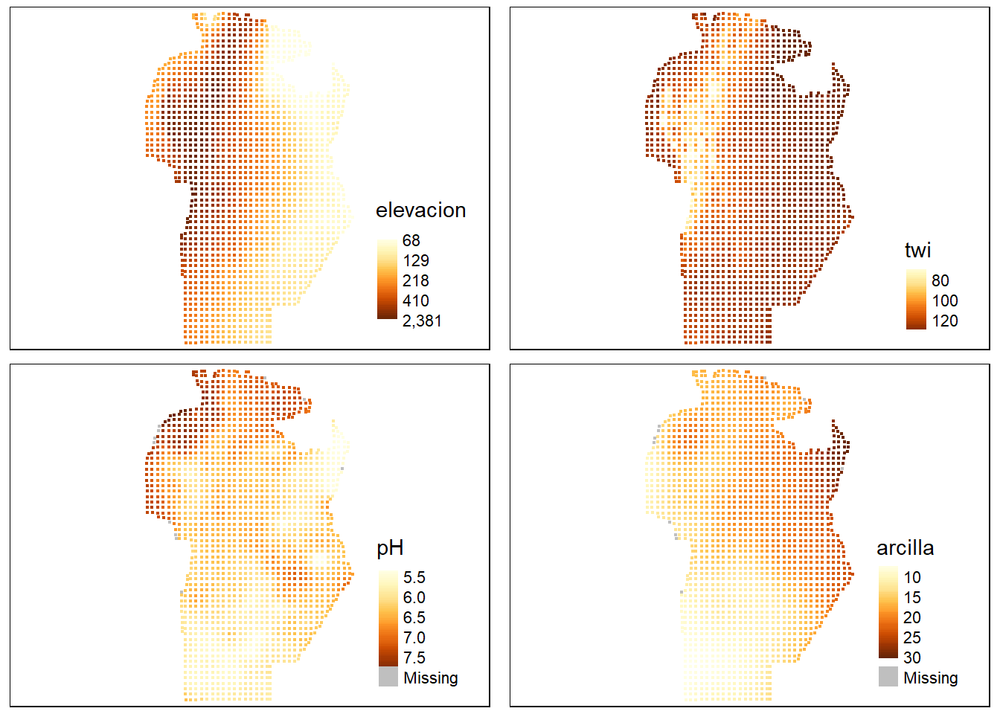
8 Predicción con múltiples capas de datos
Una vez que se ha confeccionado la grilla de predicción y se ha unificado el sistema de referencia espacial entre las distintas capas de información, se comienza con el ajuste de modelos que luego serán usados para la predicción espacial en sitios sin datos. El objeto suelos, se utilizará para el ajuste de los modelos predictivos, mientras que cetroide_pred se usará para obtener predicciones para cada celda de la grilla. La distribución espacial de la variable de interés (COS) puede visualizarse con funciones del paquete tmap. A través del argumento palette se modifica la paleta de colores, las opciones disponibles pueden buscarse ejecutando el comando tmaptools::palette_explorer(). También se pueden adicionar otras herramientas de estadística descriptiva, como por ejemplo un histograma de frecuencia mediante el argumento legend.hist = TRUE. Los estilos de los ejes y leyendas se pueden modificar con la función tm_layout().
tm_shape(suelos_sf) +
tm_dots(
"COS",
style = "quantile",
size = 0.5,
palette = "BuGn",
legend.hist = TRUE
) +
tm_layout(
legend.format = list(text.separator = " a "),
legend.outside = TRUE,
legend.hist.width = 1
)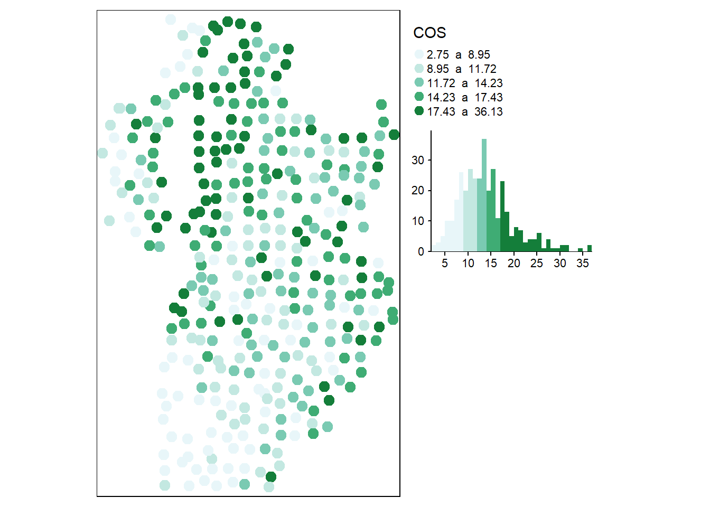
8.1 Regresión con errores correlacionados espacialmente vía REML
Se ajusta un modelo de regresión lineal con la función gls(), usando COS como variable dependiente y elevación, twi, arcilla y pH como variables predictoras. Primero, se ajusta suponiendo errores independientes (sin correlación espacial). Los resultados se guardan en el objeto denominado ajuste_ML. Seguidamente, se ajusta otro modelo de regresión con igual estructura para la componente sistemática, pero suponiendo que los términos de error aleatorio no son independientes sino que se correlacionan a través de un modelo de covarianza espacial. En particular, se ajusta el modelo de correlación espacial esférico y se suponen varianza residual única (modelo homocedástico). El método de estimación del modelo es REML. Los resultados se guardan en el objeto ajuste_err_corr.
ajuste_ML <- gls(
COS ~ 1 + elevacion + twi + arcilla + pH,
data = suelos,
method = "REML")Utilizando la función summary() se muestra a continuación el resultado del modelo sin correlación espacial (objeto ajuste_ML). Todos los términos del modelo, a excepción de elevacion resultaron significativos para un nivel de significación \(\alpha=0.05\). Se observó una correlación alta entre elevacion y twi (0,859), por esta colinealidad entre ambas variables, el término elevacion pudo no haber resultado significativo y podría sacarse del modelo. Se muestra también las características de la distribución de los residuos (mínimo, máximo valor y principales cuartiles). Es de esperar que los residuos estandarizados se encuentren en el intervalo [-3, 3], los valores fuera de este rango se consideran valores atípicos y podrían ser eliminados para reajustar el modelo. La varianza residual es el cuadrado de 4.58, indicando que desviaciones de 4,58 g/kg pueden existir por azar y que no se relacionan a las fuentes de variación reconocidas a priori.
summary(ajuste_ML)Generalized least squares fit by REML
Model: COS ~ 1 + elevacion + twi + arcilla + pH
Data: suelos
AIC BIC logLik
2088.02 2111.081 -1038.01
Coefficients:
Value Std.Error t-value p-value
(Intercept) 37.17201 6.654919 5.585644 0.0000
elevacion 0.00349 0.002126 1.641544 0.1016
twi -0.21008 0.046813 -4.487724 0.0000
arcilla 0.33407 0.030836 10.833750 0.0000
pH -0.76640 0.381759 -2.007542 0.0455
Correlation:
(Intr) elevcn twi arcill
elevacion -0.767
twi -0.919 0.859
arcilla -0.047 -0.001 -0.064
pH -0.347 -0.163 -0.035 0.040
Standardized residuals:
Min Q1 Med Q3 Max
-3.4274421 -0.5958947 -0.1180292 0.4724770 4.7869984
Residual standard error: 4.58134
Degrees of freedom: 350 total; 345 residualPara el modelo ajustado suponiendo errores correlacionados, los criterios de información de AIC y BIC fueron menores que los obtenidos bajo el supuesto de errores independientes, indicando la conveniencia de considerar la correlación espacial. Los parámetros del modelo asociado a la componente aleatoria son rango = 17791,35 m y varianza residual igual al cuadrado de 4,56. Estos caracterizan la matriz de varianza y covarianza de los errores y proveen una estimación del semivariograma esférico que describe el proceso espacial subyacente, i.e. observaciones separadas por más de 17791,35 m no se encuentran correlacionadas y la varianza residual de las observaciones independientes o con distancias mayor al rango, expresada como desvío estándar, es 4,56.
summary(ajuste_err_corr)Generalized least squares fit by REML
Model: COS ~ 1 + elevacion + twi + arcilla + pH
Data: suelos
AIC BIC logLik
2077.613 2104.518 -1031.806
Correlation Structure: Spherical spatial correlation
Formula: ~X + Y
Parameter estimate(s):
range
17791.35
Coefficients:
Value Std.Error t-value p-value
(Intercept) 36.97464 6.444078 5.737771 0.0000
elevacion 0.00363 0.002117 1.712655 0.0877
twi -0.20331 0.046119 -4.408389 0.0000
arcilla 0.33384 0.026734 12.487196 0.0000
pH -0.87070 0.361113 -2.411156 0.0164
Correlation:
(Intr) elevcn twi arcill
elevacion -0.763
twi -0.916 0.853
arcilla -0.218 0.083 0.038
pH -0.285 -0.224 -0.108 0.260
Standardized residuals:
Min Q1 Med Q3 Max
-3.4154164 -0.5776356 -0.1173952 0.4755831 4.8429592
Residual standard error: 4.565597
Degrees of freedom: 350 total; 345 residualLas predicciones se realizaron utilizando la función predict() sobre los centroides de la grilla de predicción utilizando el mejor modelo entre los ajustados. Se convierte el objeto centroide_pred en un data.frame, eliminando del objeto centroide_pred la columna que contiene las características espaciales mediante la función st_drop_geometry() y extrayendo mediante la función st_coordinates(), las coordenadas sin los atributos espaciales. Estas partes se guardan en el objeto suelos_pred de clase data.frame.
suelos_pred <- data.frame(
st_drop_geometry(centroide_pred),
st_coordinates(centroide_pred))
pred_ajuste_err_corr <- predict(
ajuste_err_corr,
newdata = suelos_pred,
na.action = na.pass)Los predichos se adicionan al objeto centroide_pred utilizando la función cbind(). Para que la visualización de estos valores, se pueda realizar utilizando los polígonos de la grilla de predicción en vez de los centroides, se deben adicionar los predichos mediante la función st_join().
8.2 Regresión con efectos aleatorios de sitio vía INLA
Para abordar la regresión bayesiana de datos espaciales, primero se define el predictor lineal ajustando un modelo de regresión lineal con la función inla(). INLA representa una combinación de aproximaciones analíticas y esquemas de integración numérica eficiente para obtener una aproximación confiable de la distribución a posteriori de interés. En el ejemplo de ilustración, se usa COS como variable dependiente y elevación, twi, arcilla y pH como variables predictoras y no se ha contemplado la estructura de correlación espacial. Se especifica la distribución que se asume para la variable respuesta a través del argumento family. El cómputo de las medidas para evaluación y comparación de modelos se realiza con el argumento control.compute especificando la medida que se pretende. Para explorar las opciones disponibles para la evaluación y comparación de modelos se ejecuta el comando ?control.compute (en el ejemplo, se solicita el criterio DIC).
El modelo ajustado es retornado como un objeto INLA. Este provee información sobre el tiempo de procesado y algunos estadísticos sobre las distribuciones a posteriori de los coeficientes de regresión (efectos fijos) y de los hiperparámetros. Para el modelo ajustado se observan los intervalos de credibilidad del 95% para los coeficientes de regresión asociados a cada una de las variables predictoras (predictor lineal) y como hiperparámetro la precisión de las observaciones de COS. En este ajuste, no hubo efectos aleatorios ni especificaciones relacionadas a la espacialidad de los datos. El intervalo de credibilidad contiene al verdadero parámetro con un 95% de probabilidad. Luego, el ajusta indica que todas las variables impactan a la respuesta, excepto la variable elevación para la cual el desvío estándar (sd) es alto relativo a la media de la distribución del coeficiente de regresión y el intervalo de credibilidad contiene al 0. Podría ser oportuno realizar un nuevo ajuste sin esta variable, que como se ha especificado anteriormente está altamente correlacionada con twi. La media a posteriori para el coeficiente de regresión que acompaña el pH es -0,766 con un intervalo de credibilidad del 95% entre -1,515 y -0,018, por lo que se interpreta que a mayores valores de pH se tendrán menores valores de COS. Se muestra también el intervalo de credibilidad [0,041; 0,055] para la precisión (inversa de la varianza \(1/\sigma_e^2\) ), la estimación es 0,048 y por tanto la varianza residual es próxima a 20 o el error estándar residual cercano a 4,56. El valor de DIC, el cual es una función de la deviance del modelo y de una medida del número efectivo de parámetros del modelo, es 2065,79. El numero efectivo de parámetros es una cantidad que caracteriza la complejidad del modelo y que no solo depende de la cantidad de parámetros sino también de la dependencia entre ellos. Esta medida puede ser usada para comparar modelos, menores valores indican mejor ajuste del modelo a los datos. El mejor de los modelos ajustados, también tendrá menor diferencia entre el valor de DIC para ese modelo y el valor de DIC para el modelo saturado. La verosimilitud marginal es otro criterio usado en selección de modelos en estadística bayesiana, al reportarse en escala log menor valor indica mejor ajuste. R-INLA obtiene las distribuciones marginales a posteriori para todos los parámetros del modelo.
summary(ajuste_INLA)
Call:
c("inla.core(formula = formula, family = family, contrasts = contrasts,
", " data = data, quantiles = quantiles, E = E, offset = offset, ", "
scale = scale, weights = weights, Ntrials = Ntrials, strata = strata,
", " lp.scale = lp.scale, link.covariates = link.covariates, verbose =
verbose, ", " lincomb = lincomb, selection = selection, control.compute
= control.compute, ", " control.predictor = control.predictor,
control.family = control.family, ", " control.inla = control.inla,
control.fixed = control.fixed, ", " control.mode = control.mode,
control.expert = control.expert, ", " control.hazard = control.hazard,
control.lincomb = control.lincomb, ", " control.update =
control.update, control.lp.scale = control.lp.scale, ", "
control.pardiso = control.pardiso, only.hyperparam = only.hyperparam,
", " inla.call = inla.call, inla.arg = inla.arg, num.threads =
num.threads, ", " blas.num.threads = blas.num.threads, keep = keep,
working.directory = working.directory, ", " silent = silent, inla.mode
= inla.mode, safe = FALSE, debug = debug, ", " .parent.frame =
.parent.frame)")
Time used:
Pre = 0.491, Running = 0.668, Post = 0.115, Total = 1.27
Fixed effects:
mean sd 0.025quant 0.5quant 0.975quant mode kld
(Intercept) 37.171 6.650 24.122 37.171 50.221 37.171 0
elevacion 0.003 0.002 -0.001 0.003 0.008 0.003 0
twi -0.210 0.047 -0.302 -0.210 -0.118 -0.210 0
arcilla 0.334 0.031 0.274 0.334 0.395 0.334 0
pH -0.766 0.381 -1.515 -0.766 -0.018 -0.766 0
Model hyperparameters:
mean sd 0.025quant 0.5quant
Precision for the Gaussian observations 0.048 0.004 0.041 0.048
0.975quant mode
Precision for the Gaussian observations 0.055 0.048
Deviance Information Criterion (DIC) ...............: 2065.62
Deviance Information Criterion (DIC, saturated) ....: 358.50
Effective number of parameters .....................: 6.00
Marginal log-Likelihood: -1070.11
is computed
Posterior summaries for the linear predictor and the fitted values are computed
(Posterior marginals needs also 'control.compute=list(return.marginals.predictor=TRUE)')Los efectos aleatorios en INLA se incluyen en la formula del predictor lineal usando la función f(). Para el ejemplo de ilustración, más abajo se ajusta el modelo de regresión donde se adiciona un efecto aleatorio de sitio para caracterizar el proceso espacial subyacente a los datos. Dado que la función f() se valúa sobre un red de nodos conformada a partir de las observaciones, es primero necesario construir una malla que cubra el dominio espacial y definir un objeto que contiene la identificación de los nodos con observaciones. La malla se arma con la función inla.mesh.2d() cuyos argumentos o parámetros de la malla son: cutoff define la distancia mínima entre vértices de los triángulos que conforman la malla y max.edge que refiere a la longitud máxima del lado de cada triángulo. Por defecto, la malla se construye con el método de triangulación de Delauny.
sitios <- suelos[, c("X", "Y")]
malla <- inla.mesh.2d(sitios, cutoff = 200,
max.edge = 200000)Para estimar la matriz de varianzas y covarianzas de los efectos de sitio por el método SPDE se utiliza la función inla.spde2.matern(). Un argumento a especificar es el parámetro \(\alpha\) (que varía entre 0 y 2). Por defecto es 2 para aproxima una función de correlación espacial del tipo exponencial como modelo de correlación espacial entre los efectos de sitio.
spde <- inla.spde2.matern(mesh = malla,
alpha = 2)Otra función posible es inla.spde2.pcmatern, en la cual hay que especificar el rango (argumetno prior.range) y desvío estándar marginal (argumetno prior.sigma) a priori. Para ambos argumentos hay que especificarle un vector de largo dos. En el caso de prior.range los valores contienen el range0 y Prange, especificando que \(P(\rho < \rho_0) = p_\rho\), donde \(\rho\) es el rando espacial del campo aleatorio. El argumento prior.sigma se especifica de tal manera que \(P(\sigma > \sigma_0) = p_\rho\), donde \(\sigma\) es la desviación estándar residual del campo.
spde <- inla.spde2.pcmatern(
mesh = malla,
prior.range = c(20000, 0.05),
prior.sigma = c(0.2, 0.05)
)Luego de realizar la malla y crear el objeto del modelo Matern, se ajusta el modelo de regresión con efecto aleatorio de sitio. En esta ilustración se ajustará utilizando tanto la función inla() del paquete INLA, como así también la función bru() del paquete inlabru. Con ambas funciones se obtendrá el mismo modelo, por lo que se debería seleccionar una única alternativa.
El paquete inlabru fue desarrollado para facilitar la modelación espacial utilizando funciones del paquete INLA, por lo que crearemos un objeto espacial llamado suelos_sf para la función que pueda identificar los sitios y el sistema de coordenadas de manera automática. Los resultados son un objeto INLA que incluyen las distribuciones a posteriori de los efectos latentes y de los hiperparámetros, así como estadísticos de resumen. Como se ejemplifica adelante, pueden obtenerse estimaciones a posteriori de parámetros del campo espacial latente. La fórmula es similar a la especificada anteriormente, pero se adiciona el efecto de sitio llamado site.
suelos_sf <- st_as_sf(suelos,
coords = c("X", "Y"),
crs = 32720)
ajuste_INLAspde <-
bru(
COS ~
Intercept(1) + elevacion + twi +
arcilla + pH +
site(main = coordinates, model = spde),
family = "gaussian",
data = as_Spatial(suelos_sf)
)En el caso de utilizar la función inla(), es necesario especificar los sitios donde se encuentras las observaciones, para esto se generará el objeto site a partir de los sitios de la malla.
summary(ajuste_INLAspde)inlabru version: 2.7.0
INLA version: 22.12.16
Components:
Intercept: main = linear(1)
elevacion: main = linear(elevacion)
twi: main = linear(twi)
arcilla: main = linear(arcilla)
pH: main = linear(pH)
site: main = spde(coordinates)
Likelihoods:
Family: 'gaussian'
Data class: 'SpatialPointsDataFrame'
Predictor: COS ~ .
Time used:
Pre = 1.04, Running = 0.452, Post = 0.167, Total = 1.66
Fixed effects:
mean sd 0.025quant 0.5quant 0.975quant mode kld
Intercept 41.445 6.525 28.633 41.448 54.239 41.454 0
elevacion 0.005 0.002 0.000 0.005 0.009 0.005 0
twi -0.219 0.045 -0.307 -0.219 -0.131 -0.219 0
arcilla 0.233 0.039 0.157 0.233 0.308 0.233 0
pH -1.038 0.377 -1.776 -1.039 -0.299 -1.039 0
Random effects:
Name Model
site SPDE2 model
Model hyperparameters:
mean sd 0.025quant 0.5quant
Precision for the Gaussian observations 5.70e-02 5.00e-03 4.80e-02 5.70e-02
Range for site 3.42e+05 1.06e+05 1.77e+05 3.28e+05
Stdev for site 9.60e-01 2.19e-01 5.83e-01 9.43e-01
0.975quant mode
Precision for the Gaussian observations 6.60e-02 5.60e-02
Range for site 5.91e+05 3.01e+05
Stdev for site 1.44e+00 9.13e-01
Deviance Information Criterion (DIC) ...............: 2015.13
Deviance Information Criterion (DIC, saturated) ....: 366.79
Effective number of parameters .....................: 13.66
Watanabe-Akaike information criterion (WAIC) ...: 2020.41
Effective number of parameters .................: 17.93
Marginal log-Likelihood: -1071.64
is computed
Posterior summaries for the linear predictor and the fitted values are computed
(Posterior marginals needs also 'control.compute=list(return.marginals.predictor=TRUE)')El objeto resultante provee información sobre los intervalos de credibilidad del 95% de los coeficientes de regresión y de los hiperparámetros. Estos son además de la precisión Theta1 y Theta2 que definen la función de correlación espacial subyacente. Los parámetros Theta1 y Theta2 no son de interpretación directa, pero dependen de los parámetros que caracterizan el proceso espacial (rango y varianza estructural). Utilizando la función inla.spde2.result() se puede obtener la distribución a posteriori de los parámetros expresadas en términos de rango y varianza estructural.
resultados_spde <-
inla.spde2.result(inla = ajuste_INLAspde,
name = "site", spde = spde)
inla.emarginal(function(x) {x},
resultados_spde$marginals.range.nominal[[1]])[1] 342057.7inla.emarginal(function(x) {x},
resultados_spde$marginals.variance.nominal[[1]])[1] 0.9689066Para comparar los modelos de regresión ajustados con errores independientes y con correlación espacial se visualizan medidas de bondad de ajuste como DIC para ambos modelos.
c(ajuste_INLA$dic$dic, ajuste_INLAspde$dic$dic)[1] 2065.624 2015.131Comparando los valores de DIC se observa la conveniencia de usar un modelo con correlación espacial respecto a uno que supone los valores de COS independientes, dado que el primero tiene un valor menor.
8.2.1 Obtención de predicciones
Para obtener predicciones se puede utilizar tanto funciones del paquete inlabru o bien específicas del paquete INLA. Aquí, a modo ilustrativo, se presentan ambas formas de obtener los mismos predichos, aunque el usuario deberá optar por la de su conveniencia. Para ambas alternativas es necesario contar con un objeto que contenga los sitios en los que queremos realizar las predicciones. En el caso de no utilizar funciones de inlabru es necesario que este objeto contenga tanto información de los sitios a predecir como los datos de los sitios observados. La función bind_rows() del paquete dplyr permite juntar dos objetos de clase data.frame que contengan el mismo nombre de columnas colocando NA cuando no hay valor para un campo.
UNION JURISDICCI CAPITAL FUENTE elevacion twi pH arcilla
1 -2147483648 CORDOBA CORDOBA IGN 274.8449 118.4764 6.391590 8.209237
1.1 -2147483648 CORDOBA CORDOBA IGN 257.2227 113.7088 6.262683 8.882079
1.2 -2147483648 CORDOBA CORDOBA IGN 266.5454 112.7255 6.142890 9.475647
1.3 -2147483648 CORDOBA CORDOBA IGN 255.0000 118.6159 6.136549 9.945969
1.4 -2147483648 CORDOBA CORDOBA IGN 230.9800 119.1276 5.946674 10.268174
1.5 -2147483648 CORDOBA CORDOBA IGN 201.1941 118.7030 5.782518 10.445782
X Y ID_2 COS
1 310498.8 6129968 NA NA
1.1 319332.6 6130045 NA NA
1.2 329333.4 6130153 NA NA
1.3 339337.7 6130238 NA NA
1.4 349337.5 6130314 NA NA
1.5 359337.5 6130390 NA NA
8.3 Predicciones utilizando el paquete inlabru
El paquete inlabru contiene una función predict la cual puede ser utilizada para obtener las predicciones. Transformaremos el objeto suelos_pred_INLA en uno de clase espacial. Para utilizar esta función, el modelo debe ajustarse mediante la función bru(). Mediante una fórmula, es necesario especificar los efectos que queremos considerar para la predicción, en este caso consideraremos todos los efectos del ajuste.
suelos_pred_INLA_sf <-
st_as_sf(suelos_pred_INLA,
coords = c("X", "Y"),
crs = 32720)
pred_INLAspde_bru <-
predict(
ajuste_INLAspde,
as_Spatial(suelos_pred_INLA_sf),
~ Intercept + elevacion +
twi + arcilla + pH + site
)Los predichos pueden ser graficados utilizando el paquete ggplot2 y la función gg() del paquete inlabru.
ggplot() +
gg(pred_INLAspde_bru, aes(color = mean), size = 3) +
coord_equal() +
labs(x = "X",
y = "Y",
color = "COS predicho")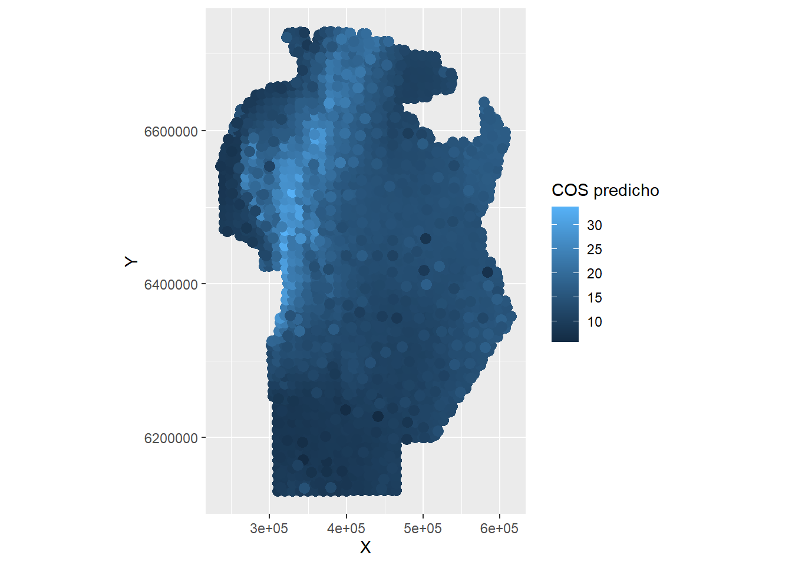
8.4 Utilizando INLA
En R-INLA no existe una funcion predict() como en gls. Las predicciones deben ser obtenidas como parte del modelo ajustado. Dado que las predicciones puedes ser entendidas como el ajuste de un modelo con datos faltantes simplemente se especificará, antes del ajuste, y[i] = NA para aquellos sitios donde se desea predecir. Las distribuciones de los valores predichos no son devueltas directamente, pero se pueden explorar. INLA retorna las a posteriori marginales para los efectos aleatorios y para el predictor linear en el sitio faltante. Adicionando el ruido de las observaciones a los valores ajustados se obtienen los valores predichos para el sitio.
Luego de identificar el predictor lineal, debe definirse la malla y el modelo espacial para la grilla de predicción asociada a los efectos aleatorios de sitios. Mediante el argumento control.predictor en la función inla() se indica que debe computarse el valor de la variable respuesta en el lugar del dato faltante.
sitios_pred <- suelos_pred_INLA[, c("X", "Y")]malla_pred <- inla.mesh.2d(loc = sitios_pred,
cutoff = 200,
max.edge = 200000)nodos_pred <- malla_pred$idx$loc
spde_pred <- inla.spde2.pcmatern(
mesh = malla_pred,
prior.range = c(20000, 0.05),
prior.sigma = c(0.2, 0.05)
)
pred_INLAspde <-
inla(
COS ~ 1 + elevacion + twi +
arcilla + pH +
f(nodos_pred,
model = spde_pred,
diagonal = 1e-6),
family = 'gaussian',
data = suelos_pred_INLA,
control.predictor =
list(link = 1, compute = TRUE)
)Se puede obtener la media de la distribución a posteriori de los valores predichos para cada sitio en la grilla de predicción, para mapear la distribución espacial de la variable respuesta.
COS_pred_INLA <-
pred_INLAspde$summary.fitted.values$mean
COS_pred_inlabru <-
pred_INLAspde_bru$mean
pred_err_corr <-
cbind(
suelos_pred_INLA_sf,
"COS_pred_INLA" = COS_pred_INLA,
"COS_pred_inlabru" = COS_pred_inlabru
)
map_pred_inla <-
tm_shape(pred_err_corr) +
tm_dots("COS_pred_INLA", style = "cont")
map_pred_inlabru <-
tm_shape(pred_err_corr) +
tm_dots("COS_pred_inlabru", style = "cont")
tmap_arrange(map_pred_inla,
map_pred_inlabru)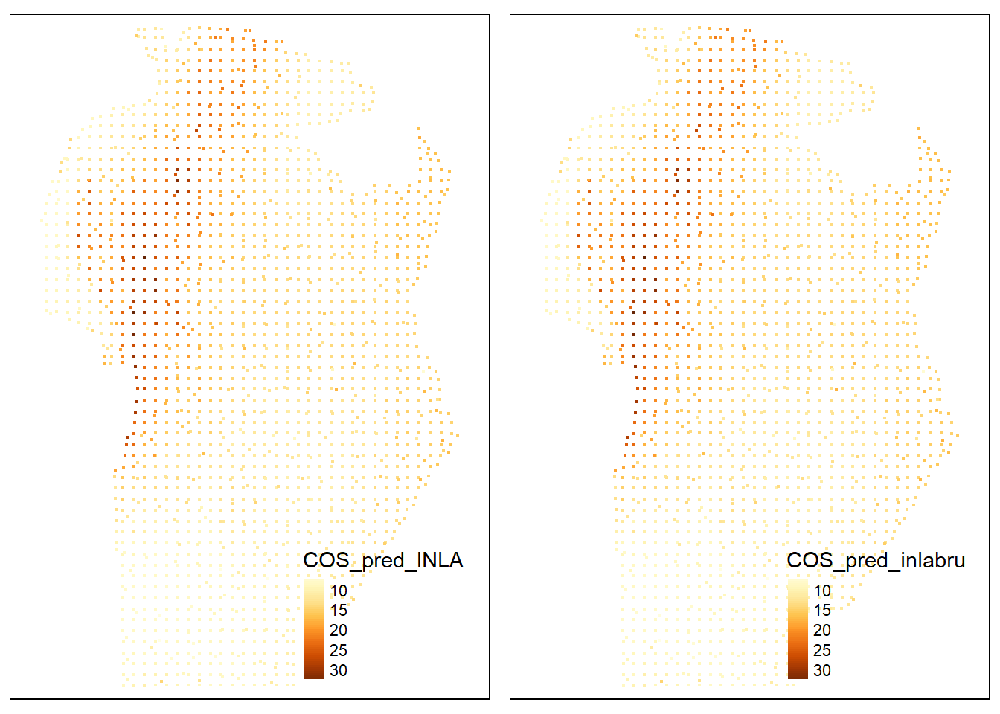
8.5 Regresión vía modelos basados en árbol
Se ajusta un modelo GBR o gradient boosting model con errores correlacionados espacialmente en dos pasos, primero se optimiza la parametrización del predictor GBR usando datos de los sitios observados y se obtienen los residuos de este modelo. En segunda instancia, se ajusta un modelo de semivariaograma a los residuos que se usará para realizar predicción kriging de residuos sobre toda la grilla de predicción. Finalmente, los residuos predichos se adicional a la componente sistemática predicha con el modelo GBR sobre la misma grilla de predicción.
Para implementar GBR se utiliza el paquete caret. Para optimizar el modelo GBM. se genera una grilla de valores posibles para sus parámetros con la función expand.grid(). Esta función genera un data.frame que contiene en las filas cada una de las combinaciones posibles generadas a partir de los rangos de valores propuestos para cada parámetro del modelo GBM. Éstos son: n.trees que definen el número total de árboles ajustados, shrinkage que regula la extensión de cada árbol, n.minobsinnode que representa el mínimo de observaciones en cada nodo terminal y bag.fraction la proporción de observaciones del grupo de entrenamiento seleccionadas aleatoriamente para la expansión sucesiva del árbol. El tipo de validación cruzada para la optimización de los parámetros del modelo se realiza a través de la función train.control. Luego utilizando la función train() se especifica el modelo con el argumento method, en este caso gbm. La misma función train() genera un objeto con el modelo parametrizado con la configuración valores que arrojan el menor error predictivo, es decir con un modelo del tipo árbol optimizado.
param_gbm <- expand.grid(
interaction.depth = c(2:4),
n.trees = (1:30) * 100,
shrinkage = c(0.001, 0.01),
n.minobsinnode = c(7, 5)
)
control <- trainControl(method = "repeatedcv",
number = 5,
repeats = 5)
ajuste_gbm <- train(
COS ~ elevacion + twi + arcilla + pH,
data = suelos,
method = "gbm",
trControl = control,
verbose = FALSE,
metric = "RMSE",
tuneGrid = param_gbm
)Pidiendo un gráfico del objeto ajuste_gbm se puede acceder al resumen del proceso de optimización de los parámetros. El rendimiento del modelo depende de estos parámetros, pero es posible identificar las combinaciones que generan el mejor desempeño predictivo. A su vez, a través del comando ajuste_gbm$bestTune podemos acceder a los parámetros que definen el modelo óptimo.
ajuste_gbm$bestTune n.trees interaction.depth shrinkage n.minobsinnode
173 2300 4 0.001 7El objeto resultante del ajuste GBM, provee un gráfico de la influencia relativa de cada variable predictora para explicar COS, y el árbol con el que se realizará la predicción. A partir de la función predict() sobre los datos observados, se obtienen predichos y consecuentemente los residuos del modelo GBR.
summary(ajuste_gbm)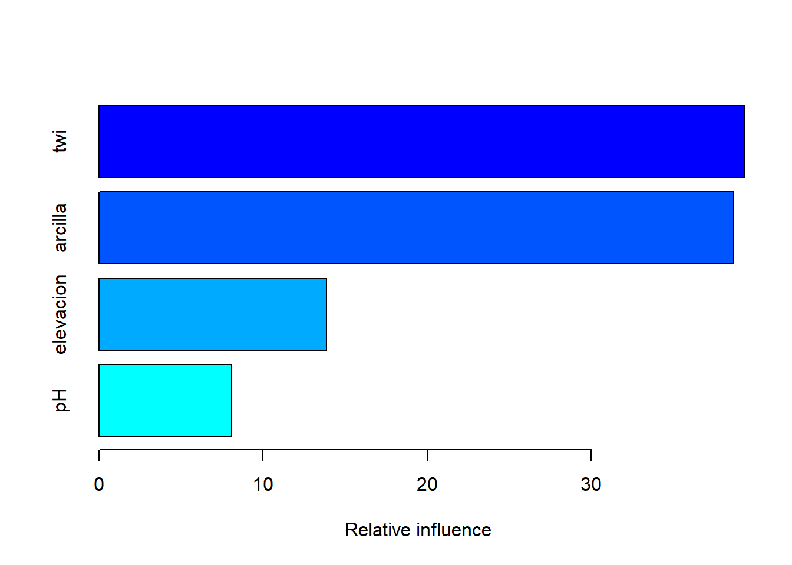
var rel.inf
twi twi 39.342667
arcilla arcilla 38.700249
elevacion elevacion 13.873191
pH pH 8.083893En la segunda etapa, se ajusta una función de semivarianza a los residuos del modelo GBM utilizando las funciones variogram y fit.variogram del paquete gstat.
suelos$residuosgbm <-
suelos$COS - predict(ajuste_gbm,
newdata = suelos)
suelos <-
st_as_sf(suelos,
coords = c("X", "Y"),
crs = 32720)
semiv_gbmk <- variogram(residuosgbm ~ 1, suelos)
plot(semiv_gbmk)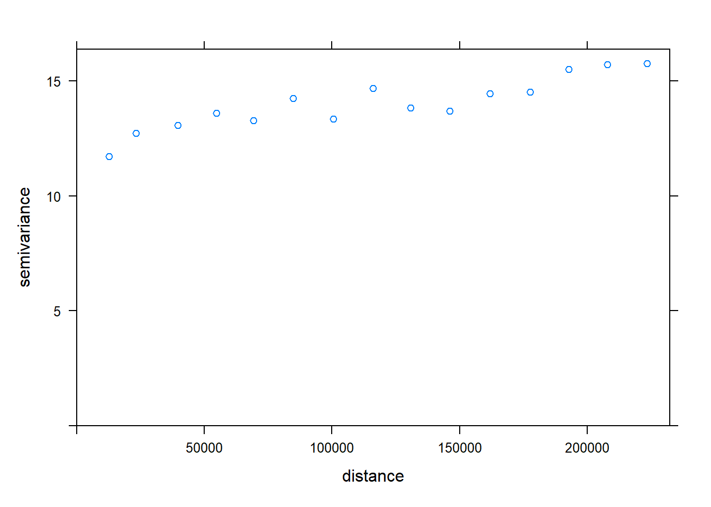
semiv_aj_gbmk <-
fit.variogram(semiv_gbmk ,
vgm(c("Exp", "Sph", "Gau")))
plot(semiv_gbmk, semiv_aj_gbmk)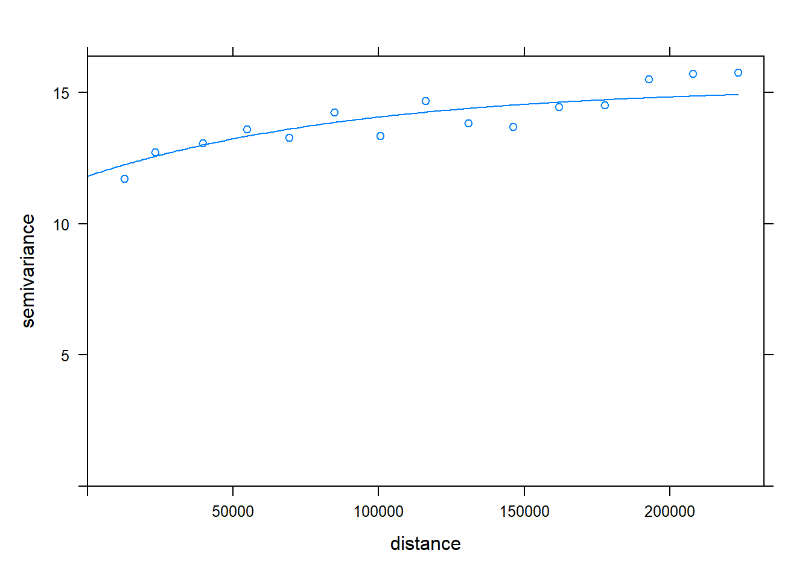
Para obtener un predicción de COS en los sitios no muestreados, se realiza la predicción kriging de los residuos sobre los sitios de la grilla de predicción utilizando el modelo ajustado en el paso anterior a partir de la función krige(). Luego se utiliza el modelo GBM (árbol optimo) para predecir COS sobre la grilla de predicción sin considerar la espacialidad. Finalmente, la predicción de COS en cada sitio se compone sumando la predicción del modelo GBM y la predicción kriging de los residuos para cada sitio de la grilla de predicción.
krig_res_gbm <-
krige(
residuosgbm ~ 1,
location = suelos,
newdata = pred_err_corr,
model = semiv_aj_gbmk
)[using ordinary kriging]gbmk_pred <-
predict(ajuste_gbm,
newdata = pred_err_corr,
na.action = na.pass) +
krig_res_gbm$var1.pred
pred_err_corr <-
cbind(pred_err_corr,
"COS_pred_GBM" = gbmk_pred)
tm_shape(pred_err_corr) +
tm_dots("COS_pred_GBM", style = "cont") +
tm_layout(legend.outside = TRUE)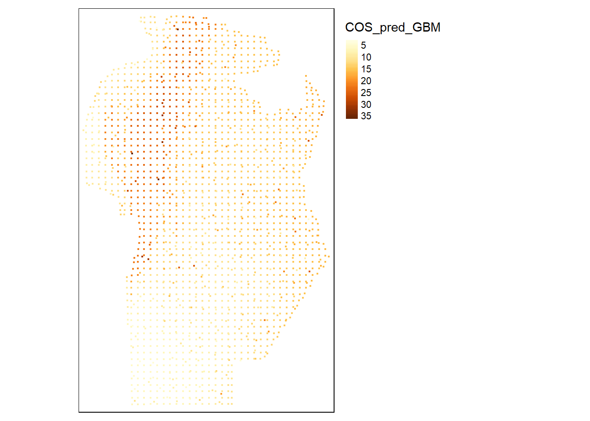